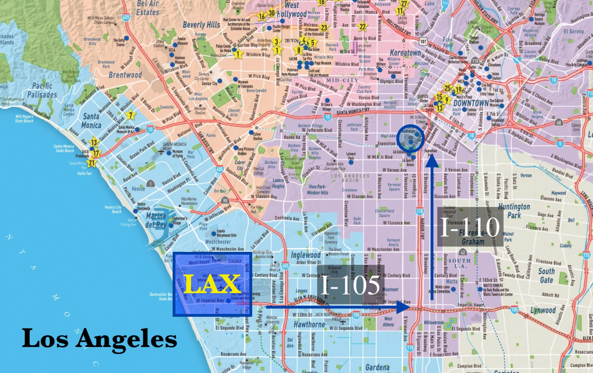

New Students Guide
Click here for the SCend Off! 2020 slide deck.
Pre-Departure Checklist
Passport, I-20, Visa and copies of
them
Your address in US
Copies of your academic transcript
Documentation of receiving 2 doses of
MMR (Measles, Mumps, & Rubella) vaccine on or after first
birthday or positive Rubeola and Mumps titers (blood tests)
Documentation of receiving 2 doses of
Varicella (Chickenpox) on or after first birthday or a positive
varicella titer (blood test)
Graphing calculator
Essential toiletries to last for the
first week or so. You can make a trip to Target/Walmart to get
the rest
Adaptor and/or extension cord to use
electrical appliances from Singapore
Stationery
TSA Lock
Pre-orientation homework
Alcohol edu test online This list is
not conclusive, so please pack whatever you deem necessary!
__What not to bring__
2-Hole Punches because 3-hole punchers
are used in US
A4 paper, US uses letter-sized papers
Upon Arrival at LAX
__Driving Directions to USC__
1. I-105 East
2. I-110 North
3. Exit at 37th Street / Exposition Boulevard (Exit 20B)

__Taxi__
* Costs at least USD 40, excluding tips
__Super-Shuttle__
* USD 18, excluding tips * Shared van service
* Go to [http://www.supershuttle.com](http://www.supershuttle.com) to
book a ride
__Uber/Lyft__
* Cheaper than a taxi, no tips required (unless you want to)
{kind=link}
Where to Eat
__On-Campus__
* Dining Halls – EVK/Parkside/University Village
* Ronald Tutor Campus Center – CPK/Panda Express/Habit
* Burger/Seeds/Lemonade/Little Galen
* Moreton Fig
__Off-Campus__
* Chipotle - (right below Tuscany Apts at South Figueroa St)
* Chick-Fil-A
* Blaze Pizza
* Pizza Studio
* Ono Hawaiian BBQ
* Poke by Hawaii/ Ahi Poke Bowl
* Yoshinoya
* Ebaes - Ramen
* Northern Cafe - Americanized Chinese
For more information: search "Top 10 Walkable Restaurants Near USC" on YouTube
Please also check out our [Makan Guide](./makan-guide.html)
USC Amenities
__Lyft / Campus Cruiser__
* Free service from 7pm-2am
* 1 mile radius from USC
* Grab a bite with friends
* Runs till 6am during dead week
* Campus cruiser will take you and your bike home
* Remember to sign up for Lyft with your USC account.
__Food Matters__
* There is always free food on campus
* Join Free Food @ USC for updates
* Free food during finals season outside Leavey and dorms
* Farmers Market @ McCarthy Quad every Wednesday
Travelling on Campus
__Biking/Longboarding__
Besides walking to/around campus, popular alternatives of commuting would be by bicycles or
longboards. We highly advise you to purchase __two__ non-combination locks for maximum security against bicycle
thefts which occur quite frequently around campus.

Traveling Out of Campus
__Driving__
Getting a Driver's License is highly recommended
because the public transport system in LA is not easily
accessible.
__Do I need a California Driver’s License to drive in LA?__
We highly recommend obtaining a California Driver's
License because it not only acts as an Identification Card
(equivalent to Singapore's IC), but it also greatly simplifies
your purchase of a motor vehicle and its corresponding insurance
coverage.
__Where can I get it?__
You will be able to obtain a
California Driver's License at the Department of Motor Vehicle
(DMV). The nearest DMV to USC is located at 3615 South Hope
Street, which is approximately 10 minutes walking distance from
campus. Please make an appointment before heading down to DMV.
__* Recommend to go to Santa Monica DMV as the DMV near USC is
VERY INEFFICIENT and has long wait times.__
__Other methods__
* Public transport like LA Metro, Dash bus services
* Uber/Lyft
Misc.
__Phone Matters__
* You can choose from Verizon, AT&T, T-Mobile and Sprint to get your
phone plans.
* Tip: Verizon has better coverage, slightly slower speed.
AT&T has slightly faster speed, not as good coverage.
* The more people you can get, the cheaper it is.
__Amazon__
* Free prime membership for 6 months if you sign up with USC email
* Good for misc. items so you don’t have to make a trip to target
* Cheaper books
__Water__
* Tap water is safe to drink
* Best to use a water filter
* Recommended: Brita water filter (Amazon/ Target)
__Textbooks__
* Usually really expensive
* Rent off Amazon/ USC Free and For Sale FB group
__Online Shopping__
* Pick up packages from Customer Service Center (CSC) of dorms
* You can return packages through them too
* USC Post office (located next to the Starbucks at Leavey)
__USC ID__
* Can get your card punched by USC Card Services so you can hang it on a
lanyard
* USC Card Services is located next to the post office in PSX
__Dorm Beds__
* Get the CSC to raise it so you can store stuff underneath to maximize
space
__California ID__
* Obtaining a California ID from the DMV is an option if you do not wish to
carry your International ID (Not U.S.). This is recommended if you
cannot / do not wish to obtain a California Driver’s License.
Banking
__Major Banks around USC__
__> Bank of America__
Located at USC Village
3201 S Hoover St
Los Angeles, CA 90089
(213) 477-1001
Monday - Friday: 9:00 a.m. - 6:00 p.m.
Saturday: 9:00 a.m. - 2:00 p.m.
Sunday: Closed
BOA ATMs are also located in the campus center (beside Ronald Tutor
Campus Center)
__> USC Credit Union__
Located on campus, lower initial money deposit and money limit, credit
and debit cards catered to student needs
University Park Campus
King Hall, 2nd Floor
MC 2280
Contact Number: 213-821-7100
Hours of Operation: Mon-Fri: 9am to 5pm
http://www.usccreditunion.org
__> Chase Bank__
Located at University Gateway
3335 S Figueroa St
Los Angeles, CA 90007
Contact Number: (213) 745-7928
__> Citibank__
Located at 3615 S Vermont Ave, Los Angeles, CA 90007
Contact Number: (800) 627-3999